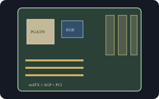

[ INDIVIDUAL COMPONENT // MOTHERBOARDS ]
Intel Desktop Board D815EFV
MicroATX Intel board for Socket 370 Pentium III/Celeron processors. D815EFV combines the 815E integrated-graphics chipset with the compact EFV board layout.

Exact identity and revision: Intel Desktop Board D815EFV; Intel family Product Guide A52560-002. Standard BIOS ID EA81520A.86A. Check the physical AA/revision and BIOS ID; do not cross-flash the D815EPFV.
Specifications
| CPU / socket / chipset | Socket 370 Intel Pentium III/Celeron models qualified by the board CPU list and BIOS; Intel 815E with integrated graphics and ICH2. |
|---|---|
| Form factor / case | MicroATX, 9.6 x 8.2 in.; compatible microATX or ATX chassis with matching standoffs and rear-I/O opening. |
| Memory | Three 168-pin SDRAM DIMM sockets, PC100/PC133, up to 512 MB supported. |
| Expansion | One AGP, three PCI, and optional CNR position depending on the exact assembly. |
| Storage | Two IDE channels supporting ATA/100 and one floppy connector. |
| Rear I/O | VGA, PS/2 keyboard/mouse, serial, parallel, USB 1.1, and audio; headers/options vary by assembly. |
| BIOS / PSU | Intel BIOS ID EA81520A.86A for the documented product family. Standard 20-pin ATX supply; verify board connector and PSU rail requirements before use. |
Compatibility and revision notes
Onboard VGA comes from the 815E graphics controller. CNR is an option and does not substitute for PCI. Match the CPU list and minimum BIOS to the unit's AA number, and verify microATX mounting points, I/O shield, CPU cooler clearance, and front-panel wiring before installation.
Sources & further reading
- Intel Desktop Boards D815EFV/D815EPFV Technical Product Specification (archived scan)Intel-authored technical specification for layout, BIOS ID, power, and connectors.
- Intel Desktop Boards D815EEA2/D815EPEA2/D815EFV/D815EPFV Product Guide (archived scan)Intel product guide with model-specific EFV/EPFV feature differences.